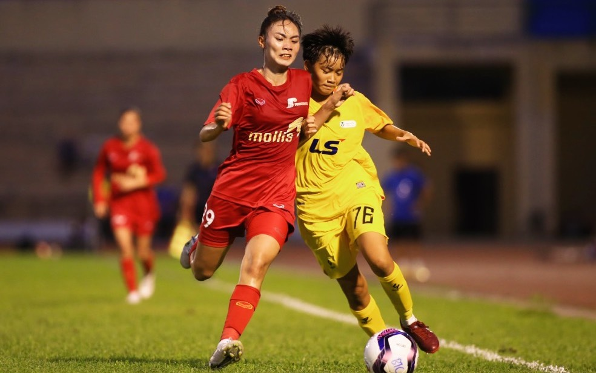

U.19 nữ Hà Nam gây sốc trước U.19 nữ TP.HCM
Thứ tư, 13/08/2023, 22:27 (GMT+7)
Chiều 13.8, lễ khai mạc giải nữ vô địch U.19 quốc gia 2023 đã diễn ra tại Hà Nam. Ngay sau lễ khai mạc, trận đấu tâm điểm của vòng 1 là cuộc đọ sức giữa chủ nhà U.19 nữ Hà Nam và U.19 nữ TP.HCM. Sau tiếng còi khai cuộc, U.19 nữ Hà Nam với đội hình gồm nhiều tuyển thủ U.20 nữ quốc gia thi đấu lấn lướt hơn. Tuy nhiên, U.19 nữ TP.HCM lại có những cái tên đang chinh chiến ở giải nữ vô địch quốc gia và sở hữu bề dày kinh nghiệm. Trong hiệp 1, U.19 nữ Hà Nam có thế trận tốt, nhưng bàn thắng vẫn chưa đến với đội bóng này. Bước sang hiệp 2, U.19 nữ Hà Nam tiếp tục duy trì sức ép đáng kể lên phần sân đối phương.
Chiều 13.8, lễ khai mạc giải nữ vô địch U.19 quốc gia 2023 đã diễn ra tại Hà Nam. Ngay sau lễ khai mạc, trận đấu tâm điểm của vòng 1 là cuộc đọ sức giữa chủ nhà U.19 nữ Hà Nam và U.19 nữ TP.HCM. Sau tiếng còi khai cuộc, U.19 nữ Hà Nam với đội hình gồm nhiều tuyển thủ U.20 nữ quốc gia thi đấu lấn lướt hơn. Tuy nhiên, U.19 nữ TP.HCM lại có những cái tên đang chinh chiến ở giải nữ vô địch quốc gia và sở hữu bề dày kinh nghiệm. Trong hiệp 1, U.19 nữ Hà Nam có thế trận tốt, nhưng bàn thắng vẫn chưa đến với đội bóng này. Bước sang hiệp 2, U.19 nữ Hà Nam tiếp tục duy trì sức ép đáng kể lên phần sân đối phương.
Giới thiệu
Tell Ur Mom II - Winno ft. Heily「Cukak Remix」/ Audio Lyrics Video
Follow Me

Liên hệ
Điện thoại: 0987654321
Email: web1013@dinhnt.com